SPI protocol
Description of the SPI protocol and its implementation in the Typhoon HIL toolchain.
SPI Protocol introduction
The Serial Peripheral interface (SPI) is a synchronous serial communication interface specification used for short-distance communication, primarily in embedded systems.
SPI devices communicate in full duplex mode using a master-slave architecture usually with a single master. The master (controller) device originates the frame for reading and writing. Multiple slave-devices may be supported through selection with individual chip select (CS), sometimes called slave select (SS) lines.
Interface
The SPI bus specifies four logic signals
- SCLK: Serial Clock (output from master)
- MOSI: Master Out Slave In (data output from master)
- MISO: Master In Slave Out (data output from slave)
- CS /SS : Chip/Slave Select (output from master to indicate that data is being sent)
MOSI on master connects to MOSI on slave. MISO on master connects to MISO on slave.
Clock polarity and phase
SPI has 4 operating modes that correspond to the four possible clocking configurations. These configurations are defined with the clock polarity (CPOL) and clock phase (CPHA).
- Mode 0: Data is sampled on the rising edge of the clock pulse with a non-inverted clock polarity (CPOL = 0, CPHA = 0)
- Mode 1: Data is sampled on the falling edge of the clock pulse with a non-inverted clock polarity (CPOL = 0, CPHA = 1)
- Mode 2: Data is sampled on the falling edge of the clock pulse with an inverted clock polarity (CPOL = 1, CPHA = 0)
- Mode 3: Data is sampled on the rising edge of the clock pulse with an inverted clock polarity (CPOL = 1, CPHA = 1)
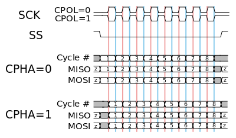
Independent slave configuration
In the independent slave configuration, there is an independent chip select line for each slave. The master asserts only one chip select at a time. Since the MISO pins of all slaves are connected together, they are required to be tri-state pins (high, low or high-impedance), where the high-impedance output must be applied when the slave is not selected.
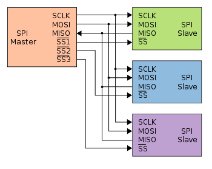
Daisy chain configuration
Some products that implement SPI may be connected in a daisy chain configuration, the first slave output being connected to the second slave input, etc. The SPI port of each slave is designed to send out during the second group of clock pulses an exact copy of the data it received during the first group of clock pulses. The whole chain acts as a communication shift register; daisy chaining is often done with shift registers to provide a bank of inputs or outputs through SPI. Each slave copies input to output in the next clock cycle until active low SS line goes high. Such a feature only requires a single SS line from the master, rather than a separate SS line for each slave.
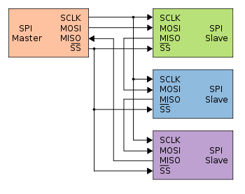
SPI protocol in Typhoon HIL toolchain
Currently, SPI Slave functionality in Typhoon HIL is implemented either directly on the HIL device (supported by the following Typhoon HIL devices: HIL101, HIL404, HIL506, and HIL606) or through the ACE board (Automotive Communication Extender).
If SPI is used via the HIL device, it is implemented using the GPIO connector. This limits the use of the protocol to the devices that have this type of connector. Information regarding the available ports for each HIL Simulator device is documented in their respective General Specifications section. The pinout for the GPIO connector per HIL device is also detailed there in the Mechanical section.
If SPI is used via the ACE board, the HIL device connects to the ACE board through an Ethernet connection, while the SPI protocol itself is implemented using the GPIO pins on the ACE board (described in Automotive Communication Extender card pinouts).
ACE SPI Setup

The ACE SPI setup component is shown in Figure 1. It is used for configuring the SPI controllers located on the Automotive Communication Extender (ACE). Each ACE device has 4 SPI controllers.
- Device ID
- Choose the Device ID corresponding to the ACE board for which the settings apply.
- Ethernet port
- Choose the Ethernet port to which the ACE board is connected.
- Execution rate
- Signal processing execution rate. Execution rate must match with the other components used in the model.
- Status output on all ACE Setup components indicates:
- Backward compatibility - During the configuration phase of the ACE card,
a backward compatibility check is executed to validate if the
firmware of the ACE card and the firmware of the HIL setup are in agreement.
Depending on the validity of the two firmwares, the first two bits of the status
output are set/reset.
- xxxx xxx1 - Valid firmwares on both THCC (Typhoon HIL Control Center) and ACE side.
- xxxx xx1x - Firmware on either ACE or HIL is not valid. Update THCC and ACE firmware version.
- Configuration errors - If configuration of some of the ACE
protocols is not applied successfully, the corresponding bit will be
set.
- xxxx x1xx - CAN protocol is not configured properly.
- xxxx 1xxx - SPI protocol is not configured properly.
- xxx1 xxxx - LIN protocol is not configured properly.
- xx1x xxxx - SENT protocol is not configured properly.
- If any available protocol reports a configuration error, simply reboot the ACE card and reload the SCADA simulation.
- Backward compatibility - During the configuration phase of the ACE card,
a backward compatibility check is executed to validate if the
firmware of the ACE card and the firmware of the HIL setup are in agreement.
Depending on the validity of the two firmwares, the first two bits of the status
output are set/reset.
SPI Slave
The SPI Slave component implements the Slave part of the SPI protocol. This component is used to configure the SPI Slave operating mode as described in the SPI Protocol introduction, define the Register map and define the message frames.
- SPI controller
- Available only if the ACE SPI Setup component is present in the schematic. If an ACE SPI Setup component is not present in schematic the default SPI controller is the HIL SPI controller.
- Define the SPI controller to be used. Visible as a combo box, allowing selection between HIL GPIO and ACEx-SPIy (where x is the SPI controller serial number and y is the selected Device ID of the ACE board).
- If the ACE SPI Setup component is not visible in the schematic. SPI communication is handled through the HIL controller.
- Execution rate
- Signal Processing execution rate.
- Sample time
- Rate at which the SPI application synchronizes with Signal Processing.
- SPI mode
- Available when SPI communication is handled through the HIL GPIO controller.
- Defines the SPI operation mode (0, 1, 2 or 3).
- MOSI
- Available when SPI communication is handled through the HIL GPIO controller.
- Defines which GPIO pin is used for the MOSI signal.
- MIS0 pin
- Available when SPI communication is handled through the HIL GPIO controller.
- Defines which GPIO pin is used for the MISO signal.
- SCLK pin
- Available when SPI communication is handled through the HIL GPIO controller.
- Defines which GPIO pin is used for the SCLK signal.
- CS/SC pin
- Available when SPI communication is handled through the HIL GPIO controller.
- Defines which GPIO pin is used for the CS/SS signal.
- Daisy chain
- Defines whether the SPI is configured to operate in Daisy Chain mode. For more information, see the Daisy chain configuration section.
- Number of slave in daisy chain
- Available when the Daisy chain option is selected.
- Defines the number of SPI slaves operating in Daisy Chain mode.
- Default return
- Available if Default return type is constant.
- Defines a 1 byte value which will be sent by the SPI Slave in parts of the message not reserved for register data.
- Default return type
- Defines whether the default return value is constant or variable.
- If the return type is constant, the default return value has predefined and fixed value defined in the Default return field.
- If the return type is variable an edit box labeled Size appears, allowing the definition of the number of bytes the default return value consists. A port is then created that requires a vector input matching the specified Size.
- Defines whether the default return value is constant or variable.
- Size
- Available when the Default return type is variable.
- Defines the number of bytes for the default return value.
- If the number of bytes defined in the Size field is smaller than the number of bytes in the message that need to be filled with default bytes, the sequence of default bytes will repeat.
- Write frame
- Defines the structure of the write frame. This property is defined as a list of Python dictionaries.
- Read frame
- Defines the structure of the read frame. This property is defined as a list of Python dictionaries.
- Message output
- Defines the structure of the data that is returned as a response to the read frame. This property is defined as a list of Python dictionaries.
- Receive output
- Choose whether the message output is sent
- in the same message as the read frame (this appends the output frame to the read frame)
- as part of the next message (output is sent at the start of the next message)
- Choose whether the message output is sent
- Generate message structure
- Selecting this option enables an additional dialog window for specifying the message frames in a more intuitive manner.
- Registers
- Definition of the SPI Slave register map.
- The property is defined as a Python dictionary. A detailed description of the register map specification is in Register map.
- Generate registers
- Selecting this option enables an additional dialog window for specifying the register map in a more intuitive manner.
Daisy chain configuration
In a daisy chain configuration, all components are duplicates of the original. All registers are vectors with their dimension determined by the property Number of slaves in daisy chain. Reset and status registers are shared across all components, enabling simultaneous resets and a unified status throughout the chain.
Message frames
- Write frame - represents the write command coming from the SPI Master. Using this message, the Master can change the value of the Slave register on the specified address
- Read frame - represents the read command coming from the SPI Master. Using this message, the Master requests data from the Slave on the specified address
- Output frame - represents the Slaves answer to the read message form the Master
These message frames have customizable structures which can be defined based on user requirements. For the structure to be functional, it has to follow these requirements:
- Write and read frames must contain Command and Address parts
- The total length of the Command and Address parts combined should be a multiple of 8
- Write and output frames must contain a Register data field
- Command and Address parts of the write and read frame must start from the same bit and have the same length
- If the output frame is sent in the next message, read and write frames must have a size greater or equal to the size of the output frame
- The start bit of the first part in the Output frame should be equal to the total size of the Read frame
- The total length of each individual frame must be a multiple of 8
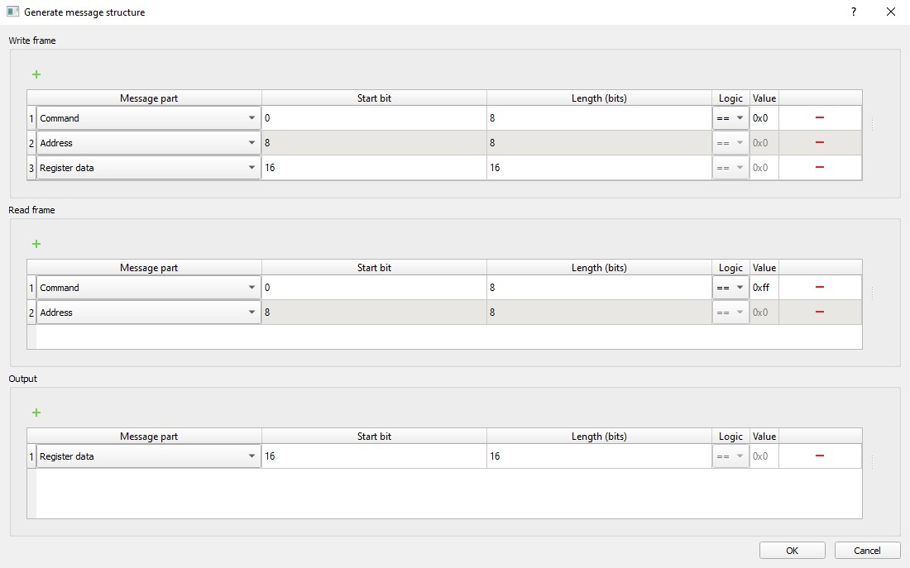
| Field | Description |
|---|---|
| Message part | Defines whether the part is a Command, Address, Register data or Input data (Input data is used as a filler and its contents is ignored) |
| Start bit | Position of first bit of that message part in the message frame |
| Length | Size of that message part, defined in bits |
| Logic | Defines the logic for the command (not available for other frame parts) |
| Value | Defines the value for the command (not available for other frame parts) |
Register map
The Register map defines the list of registers on the Slave device, their addresses, types, lengths and endianness. These registers define inputs and outputs of the SPI Slave component.
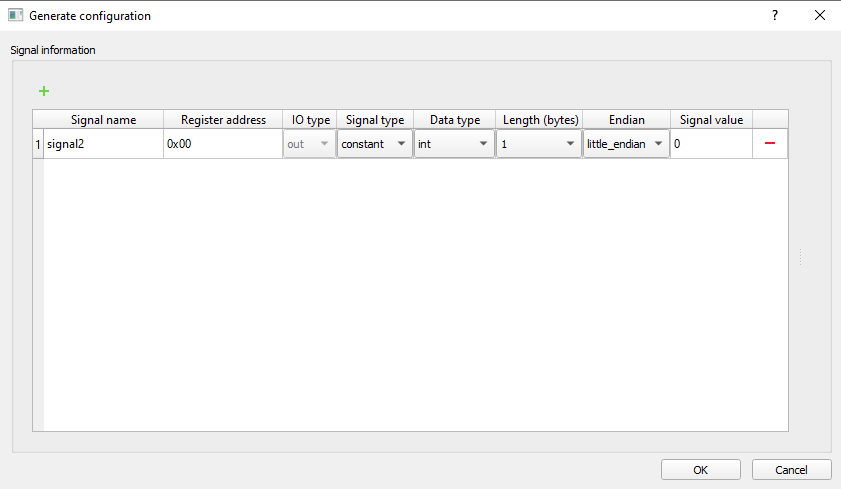
| Field | Description |
|---|---|
| Signal name | Defines the name of the register |
| Register address | Defines the register address which is used to access register data |
| IO type | Defines the register as an input or output (constant type registers can only be defined as outputs) |
| Signal type | Defines the register as a variable or constant (input registers can only be defined as variables) |
| Data type | Defines the type of data that the register holds (only registers defined as constant can have the String data type) |
| Length | Defines the register size in bytes (depends on the register data type) |
| Endian | Defines the Endianness of the register data |
| Signal value | Defines the initial register value (values can only be set for output registers) |
Accessing registers
Register data can be accessed using the user-defined register address or the addresses generated for each byte of a register. These addresses are automatically generated based on the user-defined register address using 1 byte increments. An example of this is shown in Figure 4.
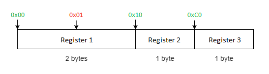
Interractions between registers
User-defined registers are stored in memory as a C array, with their order being the same as the order of definition (register address does not affect order). This makes it possible to access data from multiple registers with a single write or read command.
For example, if the registers are defined as shown in Figure 4 a read Frame can be sent with the Address 0x10 requesting 2 bytes of data. The response would contain data from Registers 2 and 3.
SPI reset
The SPI Slave application can be disabled by providing a non-zero value to the the reset input while the simulation is running. This will cause the application to reset and stay in a disabled state until a 0 is detected at the reset input. Resetting the SPI Slave application will clear all active SPI status codes.
SPI status
The SPI status output is used to monitor the SPI status which can help troubleshoot potential errors. Table 3 contains possible error codes and their descriptions. Each error has dedicated bit value(s) that respresent the error code status.
| Value | Error |
|---|---|
| 64 (0x40) | Transfer buffer underflow |
| 32 (0x20) | Receive buffer full |
| 16 (0x10) | Transfer buffer full |
| 2 (0x02) | Modfail |
| 1 (0x01) | Receive buffer overflow |
SPI Slave example
This example uses a SCADA Input to set the value of the input register, as well as Probes to read the values of the output registers. The SPI Slave component is configured as shown in the following figures.
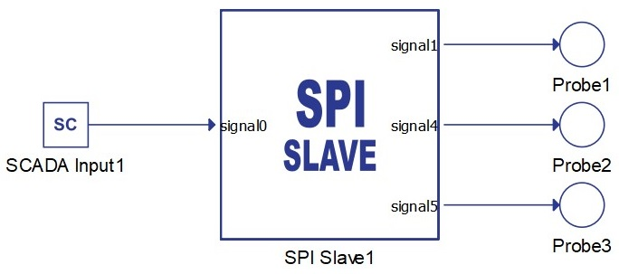
The message structure definition is shown in Figure 5.
The registers definition is shown in Figure 6.
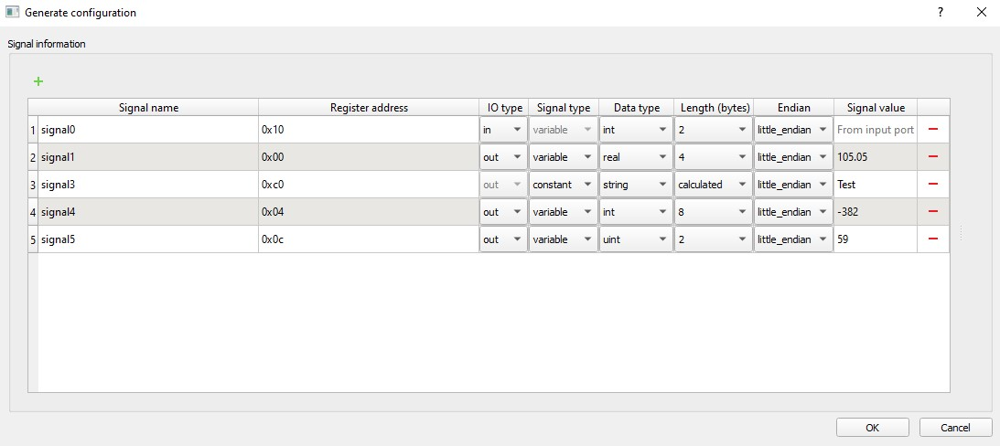
Timing diagrams of message frames
The timing diagrams for the specified message structures are as follows:
- Write frame
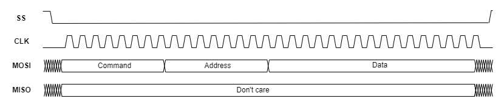
- Read frame with output frame in the same message
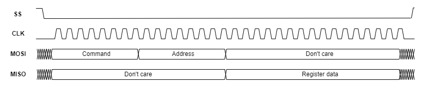
- Output frame in a new message
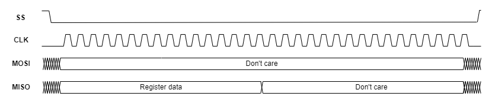